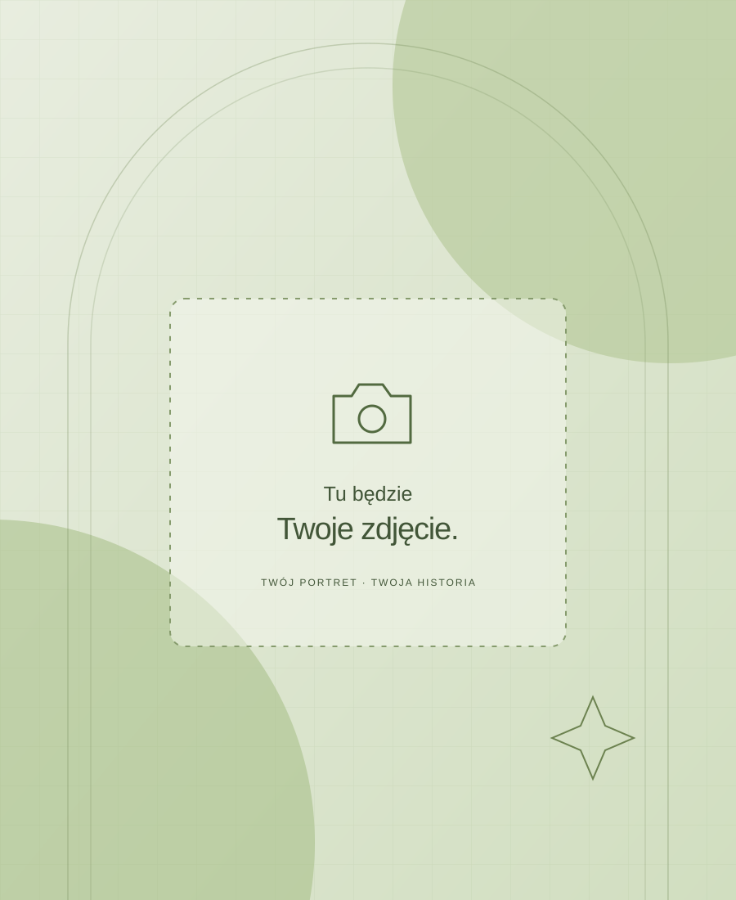

TERAZ
Tutaj napisz jednym zdaniem, czym obecnie się zajmujesz lub czego się uczysz.
OSOBIŚCIE. PO Mojemu.
Cześć, tu Adrian.
To moje miejsce w sieci. Poznaj moją historię, sprawdź, co mnie napędza, i zobacz, w jakim kierunku chcę iść.

01 / ROZEJRZYJ SIĘ
Różne strony tej samej historii.
Wybierz rozdział, od którego zaczniesz.
TERAZ
Tutaj napisz jednym zdaniem, czym obecnie się zajmujesz lub czego się uczysz.
NASTĘPNY KROK
Tutaj wpisz najbliższy cel: nowy projekt, kolejny krok w karierze albo podróż.